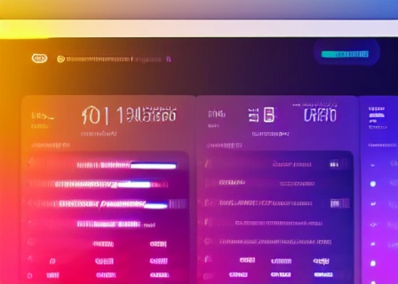
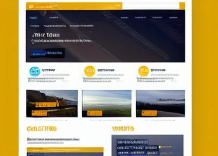

Design and develop a functional and aesthetically pleasing website using AI-powered platforms or no-code website development tools.
AI-powered platforms offer innovative solutions for creating websites that prioritize user experience and accessibility. By leveraging artificial intelligence, developers can streamline the design process and focus on enhancing mental health and well-being through intuitive interfaces and interactive features.
No-code website development tools empower individuals to build professional websites without technical expertise. These intuitive platforms enable users to unleash their creativity and share meaningful content that promotes mental health awareness and well-being.
© 2024